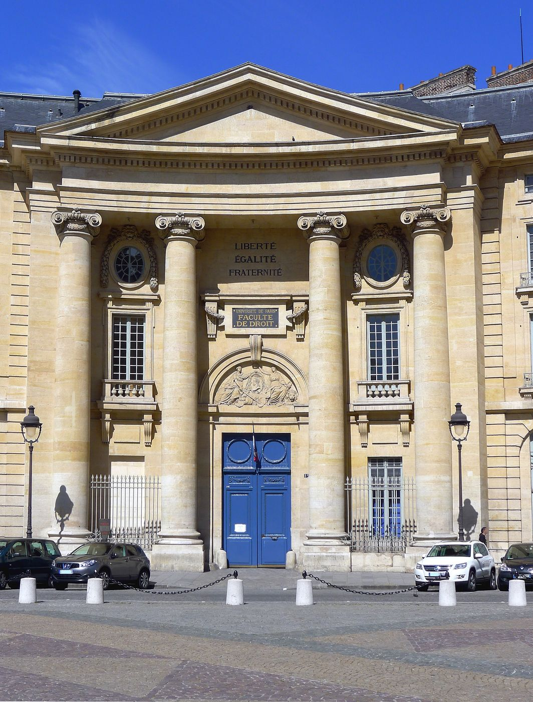
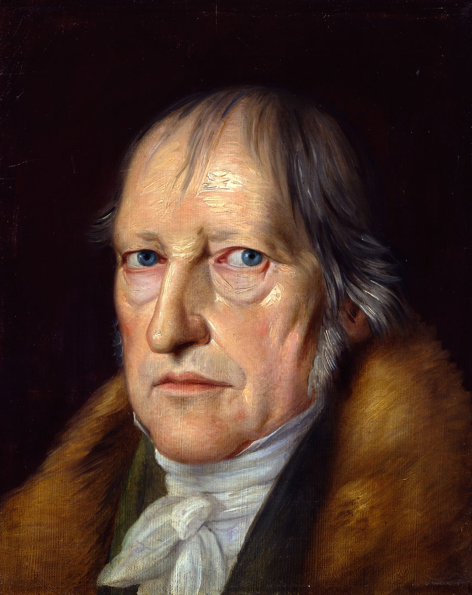
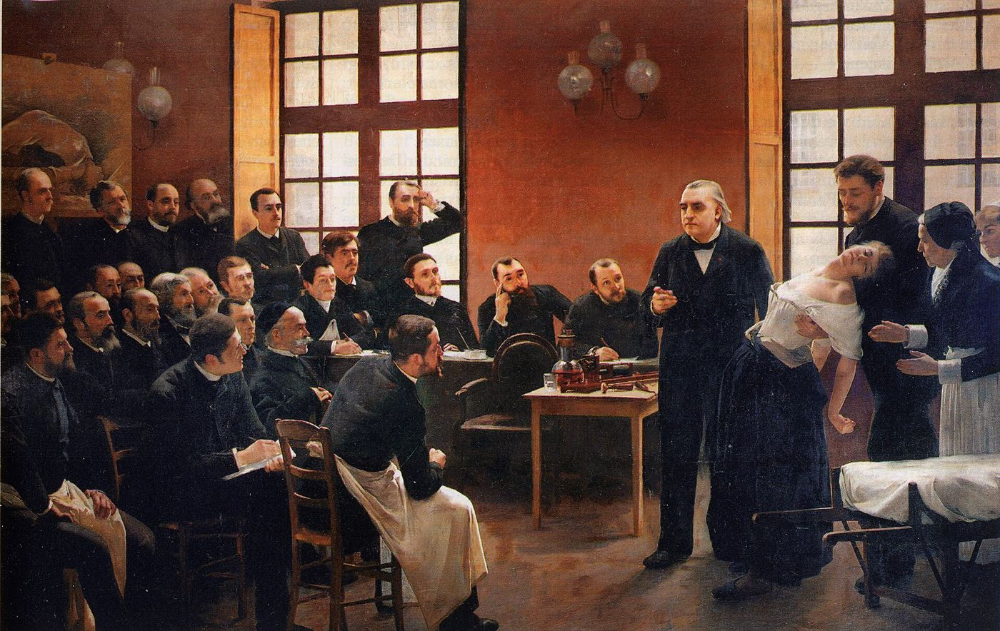

Ce à quoi vous aspirez comme révolutionnaires, c’est à un maître. Vous l’aurez.
Jacques Lacan, Vincennes, 3 Aralık 1969
I
Lacan’ın seminerleri 1964’ten beri Paris’te, Ulm Sokağı’ndaki École normale supérieure’ün Dussane salonunda yapılıyordu. Okulun yönetimi 1969 baharında Lacan’a salonun artık kendisine verilmeyeceğini bildirdi. Seminerin son dersi Haziran 1969’da bir protestoyla sona erdi; dinleyicilerden bir grup, Lacan’ın dersinden sonra okul müdürünün odasını işgal etti. Ertesi sonbahar seminer, Panthéon Meydanı’ndaki Hukuk Fakültesi’nin büyük amfisine taşındı. Lacan’ın o yıl verdiği on yedinci seminerin başlığı L’envers de la psychanalyse, Psikanalizin Tersi’ydi.1


Bu taşınma, seminerin dinleyici kitlesini de değiştirdi. Lacan’ın derslerine artık yalnızca psikanalistler ve felsefeciler değil, Mayıs 1968’in politize ettiği yüzlerce öğrenci, militan, meraklı geliyordu. Mayıs olaylarının en çok dolaşan sloganlarından biri, Sorbonne’un duvarlarına yazılmış bir alaydı: Yapılar sokağa inmez. Lacan buna birkaç ay sonra, Michel Foucault’nun Şubat 1969’da Fransız Felsefe Derneği’nde verdiği “Yazar nedir?” konuşmasının ardından yapılan tartışmada yanıt vermişti: Mayıs olayları bir şey gösterdiyse, tam da yapıların sokağa indiğini göstermişti.2 Lacan’ın o yıl kurmaya giriştiği şey, sokağa inen bu yapıların bir kuramıydı.
Kuramın en çok bilinen sahnesi ise Panthéon’da değil, Paris’in doğusunda geçti. 1968’den sonra Vincennes ormanının kıyısında kurulan deneysel üniversite, Mayıs’ın ruhunu kurumsallaştırmak isteyen bir girişimdi ve Fransa’da bünyesinde bir psikanaliz bölümü kurulan ilk üniversitelerden biriydi. Lacan 3 Aralık 1969’da oraya bir konuşma yapmaya gitti. Salon kalabalık, gergin, Lacan’ın kendisine düşmanca bir dinleyici kitlesiyle doluydu; konuşma kısa sürede bağırışların, laf atmaların, sahneye çıkan öğrencilerin araya girdiği bir kargaşaya dönüştü. Lacan bu kargaşanın ortasında, epigraf olarak aldığım cümleyi söyledi: Devrimciler olarak özlediğiniz şey bir efendidir. Ona sahip olacaksınız.3
Bu cümle sık sık bir siyasal alay, yaşlı bir ustanın genç devrimcilere karşı bir küçümsemesi olarak okunur. Ama Lacan’ın o yıl seminerinde geliştirdiği kuram, cümleye başka bir ağırlık verir. Lacan’ın söylediği, isyanın boşuna olduğu değil, isyanın da bir söylemin içinde gerçekleştiğiydi. Efendiye karşı çıkan her konuşma, efendinin konuştuğu yapının içinden konuşur ve bu yapıyı tanımadan, onun yerine yalnızca yeni bir efendi koyar.
II
Lacan söylemi, seminerin ilk dersinde, sözcüklerden bağımsız bir şey olarak tanımlar. Ona göre söylem, sözsüz bir söylemdir: tek tek söylenen cümlelerden önce gelen, onların kimin tarafından, kime, hangi yerden söylenebileceğini belirleyen bir yapı.4 Bir öğretmenle öğrencisi, bir hekimle hastası, bir patronla işçisi, bir analistle analizanı arasında geçen tek tek konuşmalar değişebilir; ama aralarındaki bağın biçimi, kimin konuşup kimin dinleyeceğini, kimin bildiğinin varsayıldığını, bu bağdan neyin çıkacağını belirleyen yapı, sözcüklerden daha kalıcıdır.
Lacan bu yapıyı dört sabit pozisyon ve bu pozisyonlar arasında dolaşan dört terimle yazar. Pozisyonların ilki, söylemi başlatan, konuşan yerdir; Lacan ona etken der. Etken her zaman bir başkasına seslenir. Bu seslenişten bir ürün çıkar. Etkenin altında ise, onu harekete geçiren ama kendisi görünmeyen bir şey durur: söylemin hakikati. Lacan bu pozisyonları bir kesir biçiminde, üstteki iki terimi bir okla bağlayarak yazar.
Bu pozisyonları dolduran dört terim, Lacan’ın öğretisinin önceki yıllarda geliştirilmiş temel kavramlarıdır. S1, efendi gösteren, öznenin kendisini tanımladığı, sorgulanmadan kabul edilen ilk gösterendir. S2, bilgi, gösterenlerin birbirine bağlandığı zincir, birikmiş ve aktarılabilir bilgi birikimidir. $, bölünmüş özne, dilin içinde konuştuğu için kendisiyle hiçbir zaman çakışamayan öznedir. Ve a, Lacan’ın bir önceki yıl Marx’ın artı-değerinden esinlenerek artı-haz, plus-de-jouir diye adlandırdığı, her söylemin ürettiği ama hiçbir söylemin bütünüyle sahiplenemediği haz artığı.5
Kuramın zarafeti, bu dört terimin sırasının hiç değişmemesindedir. S1’i her zaman S2, S2’yi a, a’yı $ izler. Terimleri pozisyonların üzerinde çeyrek tur döndürdüğünüzde, dört ayrı söylem elde edersiniz: efendinin, üniversitenin, histeriğin ve analistin söylemleri. Toplumsal bağın bütün biçimleri, Lacan’a göre, bu dört yapının bir bileşimi ya da birinden ötekine geçiştir.
Burada baştan bir yanlış anlamanın önünü almak gerekir. Söylemlerin adları, efendi, üniversite, histerik, analist, kişileri ya da tanı kategorilerini anlatmaz. Histerik söylemde konuşan biri, klinik anlamda histerik olmak zorunda değildir; bir öğrenci, bir bilim insanı, bir yurttaş da bu yerden konuşabilir. Bir analist de, kendi muayenehanesinde bile, bir an efendinin, bir an üniversitenin söylemine kayabilir. Söylemler insanların değil, yerlerin adlarıdır. Aynı kişi gün içinde bu yerlerin birinden ötekine geçer: sabah bir toplantıda efendinin, öğleden sonra bir derste bilginin, akşam bir sevgilinin karşısında histeriğin yerinden konuşur. Kuramın gücü, bir bireyi sınıflandırmaktan çok, her konuşmanın hangi yapının içinden yapıldığını sorabilmemizi sağlamasındadır.
III
Lacan’ın efendi söylemi, Hegel’in Tinin Fenomenolojisi’ndeki ünlü efendi ile köle diyalektiğinin bir yeniden okumasıdır. Hegel’de iki bilinç karşı karşıya gelir ve birbirinden tanınma talep eder. Ölüm kalım mücadelesinde canını tehlikeye atmayı göze alan efendi olur; ölümden korkup boyun eğen köle. Ama tarih efendinin değil, kölenin tarafında ilerler: Köle, efendi için çalışırken dünyayı ve kendisini biçimlendirir, bilgiyi ve zanaatı elinde tutar. Efendi ise yalnızca tüketir ve kendi tanınmasının tek kaynağı olan köleye bağımlı kalır.


Lacan’ın kuşağı Hegel’i büyük ölçüde Alexandre Kojève’in gözünden okumuştu. Kojève 1933’ten 1939’a kadar Paris’teki École pratique des hautes études’de Fenomenoloji üzerine dersler verdi; dinleyicileri arasında Lacan’ın yanı sıra Georges Bataille, Raymond Queneau, Maurice Merleau-Ponty gibi yirminci yüzyıl Fransız düşüncesinin önemli adları vardı. Kojève’in okumasında tanınma arzusu, insan arzusunun özü hâline gelir: İnsan, başkasının arzusunu arzular.6 Lacan’ın erken döneminin ayna evresi, saldırganlık ve tanınma üzerine yazıları bu okumanın izlerini taşır.
Ama 1969’daki Lacan, Hegel’den çok uzaklaşmıştır. Lacan’a göre efendinin bilgiyle bir ilişkisi yoktur; efendi bilmek istemez. Lacan’ın deyişiyle gerçek bir efendi bilmeyi hiç arzulamaz; onun istediği, işlerin yürümesidir, que ça marche. Felsefenin tarihi, Lacan’ın gözünde, efendinin kölenin bilgisini çalmasının, onu kendi bilgisi gibi sunmasının tarihidir. Lacan bu hırsızlığın ilk sahnesini Platon’un Menon diyaloğunda bulur: Sokrates, hiç geometri öğrenmemiş bir köle çocuğa sorular sorarak ona bir karenin alanını iki katına çıkarma problemini çözdürür ve bu bilginin çocukta zaten var olduğunu gösterdiğini ileri sürer.7
Formülde efendi gösteren, S1, etken yerindedir ve bilgiye, S2’ye, yani kölenin bilen emeğine seslenir. Bu bağdan bir haz artığı, a, üretilir; kölenin emeğinden çıkan ama ona ait olmayan bir artık. Efendinin altında ise, hakikat yerinde, bölünmüş özne durur. Efendi söyleminin hakikati, efendinin de bölünmüş, eksik, ölümlü bir özne olmasıdır. Efendinin bütün gücü bu hakikatin üzerini örtmekten gelir. Bir efendi konuştuğunda, söylediğinin bir gerekçesi olmasına ihtiyaç yoktur; söz efendinin ağzından çıktığı için geçerlidir. Bu söylem, Lacan’a göre, bilinçdışının da yapısıdır. Öznenin kendisini tanımladığı ilk gösterenler, adı, ailenin ona verdiği yer, onun sorgulamadan yaşadığı kimlikler, bir efendinin buyrukları gibi işler.
IV
Terimleri çeyrek tur geri çevirdiğinizde bilgi, S2, etken yerine geçer. Bu üniversitenin söylemidir. Burada konuşan, bir kişi olmaktan çok bir bilgi birikimidir: ders kitabı, kılavuz, uzman görüşü, yönetmelik. Bilgi, bir başkasına, a’nın yerine konmuş birine, öğrenciye seslenir ve ondan bölünmüş bir özne, $, üretir.
Üniversite söyleminin en önemli özelliği, hakikat yerinde efendi gösterenin durmasıdır. Bilgi tarafsız, nesnel, kişisel olmayan bir şey gibi konuşur; ama onun altında, onu harekete geçiren, sorgulanmayan bir buyruk vardır. “Bilim böyle söylüyor”, “kurallar bunu gerektiriyor”, “sistem buna izin vermiyor” cümleleri, bir efendinin buyruğunu bilginin tarafsızlığı içinde gizler. Lacan bu söylemin çağımızdaki egemenliğini, 1968 sonrasında Fransız üniversitelerinde yürürlüğe giren ders kredisi sistemi, Fransızca adıyla unités de valeur üzerinden alaycı bir dille anlatır: Öğrencinin kendisi, sistemin içinde biriktirilen bir değer birimine, bir krediye dönüşmüştür.8
Bu söylemin ürünü bölünmüş öznedir. Bilginin karşısında öğrenci, kendi sorusundan, kendi arzusundan, kendi tekilliğinden giderek uzaklaşır; ona sunulan bilgiyle kendi deneyimi arasındaki aralıkta bölünür. Üniversite söylemi, Freud’un “imkânsız” dediği mesleklerden ikincisinin, eğitmenin söylemidir. Aynı yapı, bir hastayı tanı ölçütlerinin bir listesine, bir çalışanı performans göstergelerine, bir yurttaşı istatistiklere indirgeyen her kurumda iş başındadır. Bu kurumlarda konuşan hep bilgidir; ama o bilginin kimin buyruğuyla, kimin hesabına konuştuğu görünmez kalır.
V
Terimleri efendi söyleminden bir çeyrek tur ileri çevirdiğinizde ise bölünmüş özne, $, etken yerine geçer. Bu histeriğin söylemidir ve Lacan’ın kuramında belki en verimli olanıdır. Burada konuşan, kendi bölünmüşlüğünden, eksikliğinden, semptomundan konuşan bir öznedir ve bir efendiye, S1’e seslenir: Bana ne olduğumu söyle. Bu talebin ürünü bilgidir, S2. Hakikat yerinde ise a durur, histeriğin kendisinin de tam olarak bilmediği, talebini harekete geçiren arzunun nesne-nedeni.
Bu söylemin tarihsel sahnesi, psikanalizin doğum yeridir. On dokuzuncu yüzyılın sonunda Paris’teki Salpêtrière Hastanesi’nde nörolog Jean-Martin Charcot, her salı, histerik hastaları kalabalık bir hekim ve öğrenci topluluğunun önünde sunuyor, onların nöbetlerini hipnozla başlatıp durduruyordu. André Brouillet’nin 1887 Salonu’nda sergilenen tablosu bu derslerden birini gösterir: Charcot, ayakta, dinleyicilerine dönük konuşur; yanında, kollarını yarı bilinçsiz bir hâlde bırakmış genç bir kadın, Blanche Wittmann, Joseph Babinski’nin kollarında yere düşmek üzeredir.


Freud 1885–1886 kışında Charcot’nun yanında birkaç ay geçirdi ve bu tablonun bir taşbaskı kopyasını hayatı boyunca muayenehanesinin duvarında asılı tuttu.9 Ama psikanalizi doğuran, Charcot’nun sahnesinden çok, bu sahnenin tersine dönmesiydi. Charcot’da bilgi efendinin tarafındadır; hasta, efendinin bilgisini dinleyicilere gösteren bir bedendir. Freud’un histerik hastaları ise ona başka bir şey öğretti. 1889’da tedavi ettiği Emmy von N., ona sürekli bu ya da şu belirtinin nereden geldiğini sormamasını, söyleyeceklerini söylemesine izin vermesini istemişti.10 Bilgi, efendinin ağzından değil, histeriğin sözünden doğacaktı.
Lacan histeriğin söyleminde, efendiyi bilgi üretmeye zorlayan bir yapı görür. Histerik efendiye bir soru yöneltir ve hiçbir yanıtla yetinmez; her yanıtın eksik kaldığını, efendinin bilgisinin onun hakikatini kapsamadığını gösterir. Bu yüzden Lacan, Freud’un üç imkânsız mesleğine, yönetmeye, eğitmeye ve analiz etmeye, dördüncü bir imkânsızlık ekler: arzulatmak. Histerik, efendinin arzusunu ayakta tutar; onu bilmeye, aramaya, yeniden başlamaya iter. Bilimin kendisi, Lacan’a göre, bu yapıya çok şey borçludur.
Bu yapının en öğretici örneği, Freud’un kendi başarısızlıklarından biridir. Ekim 1900’de Freud’a getirilen on sekiz yaşındaki Ida Bauer, Freud’un yayımladığı vakada Dora adıyla anılan genç kadın, babasının ona aile dostu Bay K.’nın ilgisine karşı yardım etmediğinden, kendisini bir tür takas nesnesi gibi kullandığından yakınıyordu. Freud, Dora’nın semptomlarını çözmeye çalışırken ona giderek daha ısrarlı biçimde kendi yorumunu, Dora’nın gerçekte Bay K.’ya âşık olduğunu dayattı. Dora üç ay sonra, 31 Aralık 1900’de analizi bıraktı.11 Freud vakanın sonuna eklediği sonsözde, Dora’nın ilgisinin asıl olarak Bay K.’ya değil, Bayan K.’ya yöneldiğini çok geç fark ettiğini yazar. Lacan’ın dört söylem kuramı bu başarısızlığa bir yapı kazandırır: Freud, histeriğin sorusuna efendinin bilgisiyle yanıt vermiş, histerik söylemin karşısında analist olmaktan çıkıp efendinin yerine geçmişti. Dora’nın gidişi, efendinin bilgisinin onun hakikatini kapsamadığını gösteren son ve en açık hareketti.
VI
Son çeyrek tur, analistin söylemini verir. Burada etken yerinde a, arzunun nesne-nedeni durur; analist, analizanın arzusunu harekete geçiren o boşluğun yerini tutar. Bu söylem bölünmüş özneye, analizana seslenir ve ondan efendi gösterenler, S1, üretir. Hakikat yerinde ise bilgi, S2 durur.
Formülün her ayrıntısı analitik deneyimin bir özelliğine karşılık gelir. Analist, bildiğini analizanına bir efendi gibi dayatmaz; bilgisi, hakikat yerinde, altta, sessizce durur. Analist konuşmaktan çok dinler, açıklamaktan çok noktalar, yanıt vermekten çok soruyu açık tutar. Bu suskunluğun karşısında analizan, kendi bölünmüşlüğünden konuşmaya başlar ve konuştukça, hayatını yöneten efendi gösterenleri, onu sorgusuz bir buyruğa bağlayan sözleri, adları, kimlikleri, cümleleri üretir. Bu gösterenler artık onun dışında, analizin malzemesi olarak görünür hâle gelmiştir; özne onlarla arasına bir mesafe koyabilir.
Bir örnek bunu daha somut kılabilir. Bir analizan, uzun süre, kendi hayatını yöneten bir sıfatın, diyelim ki ailesinde çocukluğundan beri ona yakıştırılan “güçlü” sıfatının farkında olmadan konuşabilir. Hiçbir zaman yardım istemeyen, başkalarının yükünü taşıyan, yorgunluğunu kimseye göstermeyen biri olarak kendini anlatır; bu tutumların her biri ona kendi seçimi gibi görünür. Analizin bir noktasında, belki bir sürçmede, belki bir düşte, belki de analistin tek bir kelimeyi tekrar etmesiyle, bu sıfat birdenbire sözün içinden ayrılır ve bir buyruk olarak duyulur. Analizan o anda, yıllardır kendisi sandığı şeyin, bir başkasının, ailesinin ya da ailesinin bir üyesinin arzusunun ağzından çıkmış bir efendi gösteren olduğunu fark eder. Formülde S1’in ürün yerinde durması bunu anlatır: Analiz efendi gösterenleri ortadan kaldırmaz, onları üretir, yani görünür ve tartışılabilir kılar.
Analistin söylemi, efendi söyleminin tam yarım tur dönmüş hâlidir. Efendi söyleminde üstte ve solda duran S1, analist söyleminde altta ve sağda, bir ürün olarak belirir; efendi söyleminin altta ve sağda ürettiği a ise analist söyleminde etken olur. Seminerin başlığı buradan gelir: Efendi söylemi, psikanalizin tersidir. Lacan bu yapının bir başka önemli sonucuna da dikkat çeker: Analiz, analizanın söylemini önce histerikleştirir. Analizine bir semptomla, bir sıkıntıyla, bir soruyla gelen kişi, analitik bağın içinde kendi bölünmüşlüğünden konuşmaya, efendisine, yani analiste, bir soru yöneltmeye davet edilir. Analizanın söylemi histeriğin söylemine dönüşmeden, analitik söylem kurulamaz.
VII
Her söylemin üst satırında, etkenden başkasına giden okun üzerinde, Lacan bir imkânsızlık okur. Etkenin başkasına yönelttiği talep hiçbir zaman tam olarak karşılanamaz. Freud 1937’de, analizin, sonuçlarının yetersiz kalacağından baştan emin olunabilecek üç “imkânsız” meslekten biri olduğunu yazmıştı; öbür ikisi, çok daha eskiden bilinen eğitmek ve yönetmekti.12 Lacan bu cümleyi bir yapısal ilkeye dönüştürür: Yönetmek efendi söyleminin, eğitmek üniversite söyleminin, analiz etmek analist söyleminin, arzulatmak histerik söyleminin imkânsızlığıdır. Bu imkânsızlık bir başarısızlık işareti değil, her toplumsal bağın kurucu sınırıdır. Bir efendi hiçbir zaman bütünüyle itaat ettiremez, bir öğretmen hiçbir zaman her şeyi öğretemez, bir analist hiçbir zaman analizanın hakikatini bütünüyle açığa çıkaramaz.
Alt satırda, ürün ile hakikat arasında ise, Lacan’ın güçsüzlük adını verdiği bir engel vardır. Söylemin ürettiği şey, onu harekete geçiren hakikate hiçbir zaman ulaşamaz. Efendi söyleminin ürettiği haz artığı, efendinin bölünmüşlüğünü onarmaz; üniversite söyleminin ürettiği bölünmüş özne, bilginin altındaki efendinin buyruğunu göremez. Lacan seminerin bittiği günlerde, Haziran 1970’te Belçika radyosuna verdiği uzun söyleşide bu iki engeli, imkânsızlık ile güçsüzlüğü ayrıntılı biçimde açar.13 Bu ayrımdan çıkarılabilecek bir sonuç, gündelik hayatın pek çok şikâyetinin bir güçsüzlük dilinde konuştuğudur: yeterince çalışmadığımız, yeterince sevilmediğimiz, yeterince bilmediğimiz için olmadığını sandığımız şey, çoğu zaman yapının kendisinin izin vermediği bir şeydir. Yapamamaktan yakınmak, yapının bir sınırıyla yüzleşmekten daha kolaydır.
Söylemler birbirinden kesin çizgilerle ayrılmaz. Toplumsal hayat, bir söylemden ötekine sürekli geçişlerle doludur ve Lacan bu geçişlerin özel bir işaretine de değinir. Üç yıl sonraki Encore seminerinde, aşkın, söylem değiştirildiğinin işareti olduğunu söyleyecektir.14 Bir öğrencinin öğretmenine, bir analizanın analistine duyduğu aşk, bağın biçiminin değiştiği, bir yapının yerini ötekine bıraktığı anda belirir.
VIII
Dört söylem 1969–1970’te kapalı bir sistem gibi görünüyordu. İki yıl sonra Lacan bu sisteme beşinci bir yapı ekledi. 12 Mayıs 1972’de Milano Üniversitesi’nde verdiği bir konuşmada, kapitalist söylem adını verdiği bir formül yazdı.15 Formül, efendi söyleminin küçük bir değişikliğinden doğar: Sol taraftaki iki terim, efendi gösteren ile bölünmüş özne, yer değiştirir. Özne artık etken yerindedir; efendi gösteren onun altına, hakikat yerine geçmiştir.
Bu küçük yer değişikliği, yapının bütün işleyişini dönüştürür. Lacan’ın çizdiği oklar artık bir kesinti, bir imkânsızlık içermez; terimler arasında kesintisiz bir dolaşım kurar. Özne, efendi gösterenden aldığı buyrukla bilgiye, yani bilimin ve tekniğin ürettiği bilgiye seslenir; bu bilgi ona nesneler üretir ve nesneler doğrudan özneye geri döner. Burada başka bir özneye, bir başkasına seslenilmez; özne yalnızca nesnelerle ilişkidedir. Lacan bu yapının çılgınca kurnaz olduğunu, tekerlekler üzerinde kayar gibi işlediğini, ama tam da bu kadar iyi işlediği için kendi kendini tükettiğini söyler.
Lacan bu dönüşümün tarihsel koşulunu Psikanalizin Tersi seminerinde zaten tarif etmişti. Hegel’in kölesi efendisine karşı bir bilgiye, bir zanaata sahipti; emeğiyle dünyayı biçimlendiren oydu. Modern çağda ise kölenin bilgisi elinden alınmıştır. Zanaatkârın elindeki bilgi makineye, fabrikanın düzenine, bilimin formüllerine aktarılmış; işçi, kendi emeğinin bilgisinden yoksun bırakılmış bir özneye dönüşmüştür. Lacan’a göre Marx’ın tarif ettiği sömürü, artık-değere el konmasından önce bu bilgiye el konmasıdır. Bilgi bir zamanlar kölenin tarafındaydı; şimdi bilimin, tekniğin ve onları yöneten kurumların tarafındadır ve özneye, yalnızca onun tüketeceği nesneler biçiminde geri döner.
Lacan Psikanalizin Tersi seminerinde, bu yapının ürettiği nesnelere bir ad da vermişti: lathouses. Kelime, Lacan’ın Yunanca hakikat, aletheia, ile varlık, ousia, kelimelerinden türettiği bir oyundur ve bilimin ürettiği, arzunun nesne-nedeninin yerine konan küçük düzenekleri, ekranları, makineleri, bir türlü doyurmayan ama sürekli yenilenen nesneleri anlatır.16 Yarım yüzyıl sonra bu sözü okurken, cebimizdeki telefonu, bitmeyen akışları, sürekli yenilenen ürünleri, kendimizi bir proje gibi yönettiğimiz uygulamaları düşünmemek zordur. Kapitalist söylemde eksiklik hiçbir zaman bir soruya dönüşmez; her eksikliğin karşısına hemen bir nesne konur ve özne, bu nesnelerin dolaşımında, başka öznelerle bağ kurmadan, kendi hazzının hizmetine girer.
Lacan’ın kapitalist söylem üzerine söyledikleri kısa ve dağınıktır; bu yapının bir söylem sayılıp sayılamayacağı, çünkü bir toplumsal bağ kurmadığı, Lacancı yazında hâlâ tartışılır. Ama kavramın klinikteki karşılığı açıktır. Bugün psikanalistlerin muayenehanelerine gelen pek çok kişi, eski anlamda bir efendinin yasağıyla, bir babanın buyruğuyla çatışmaktan çok, sınırsız bir hazzın, sınırsız bir seçeneğin, hiç bitmeyen bir “daha fazlası”nın içinde tükenmiş olarak gelir. Onlara eksik olan şey bir nesne değil, nesnenin karşısında soru sorabilecekleri bir yerdir.
IX
Vincennes’e geri dönelim. Lacan’ın devrimci öğrencilere söylediği cümle, bu kuramın ışığında, bir hakaretten çok bir teşhistir. Efendiye karşı isyan eden konuşma, efendi söyleminin bir çeyrek tur dönmüş hâli olan histerik söyleminin konuşmasıdır: Bölünmüş özne efendiye seslenir, ondan bir yanıt, bir bilgi, bir hakikat ister. Bu söylemin ürünü yeni bir bilgidir, ama yeni bir efendi de olabilir. Histerik efendiyi devirmek istemez; onun karşısında, ona eksik olduğunu göstermek ister. Lacan’ın öğrencilere söylediği, isyanlarının bu yapının içinde kaldığı sürece, eskisinin yerine yeni bir efendiyi çağırmaktan başka bir şey yapamayacağıdır.
Bu cümleye dair söylenecek son şey, Lacan’ın o yıl kendisine de aynı soruyu sormuş olmasıdır. Lacan bir okul kurmuş, bir öğreti oluşturmuş, binlerce dinleyicinin önünde konuşan bir efendiye dönüşmüştü. Analistin söylemi, kuramda, efendi söyleminin tersidir; ama pratikte, bir analist kendi bilgisini bir efendi gibi kullanmaya her an hazırdır. Lacan’ın son yıllarında kendi okulunu dağıtması, 1980’de École freudienne de Paris’i feshetmesi, belki de bu sorunun ona bıraktığı bir yanıttır.17 Dört söylem kuramı, analistin kendi yerinin de hiçbir zaman güvencede olmadığını hatırlatır. Analist, efendinin konuşmaya başladığı her yerde, o konuşmanın tersine bakan biri olarak kalabildiği ölçüde analisttir.
Notlar
- J. Lacan, Le Séminaire, Livre XVII: L’envers de la psychanalyse (1969–1970), yay. haz. J.-A. Miller, Paris: Seuil, 1991. Fransızca envers bir kumaşın, bir giysinin ters yüzünü, dikişlerin göründüğü tarafı anlatır; başlık, psikanalizin, düzgün yüzünü gösteren toplumsal söylemlerin dikiş yerlerine baktığını da ima eder. ↩︎
- M. Foucault, “Qu’est-ce qu’un auteur?”, Bulletin de la Société française de philosophie, 63/3 (1969). Konuşma 22 Şubat 1969’da yapılmış, tartışmaya katılanlar arasında Lucien Goldmann ve Lacan da bulunmuştur. Lacan’ın yanıtı tartışma tutanağında yer alır. ↩︎
- Konuşma, Seuil baskısında “Analyticon” başlığıyla seminerin ekinde yayımlanmıştır. Cümlenin devamında Lacan, dinleyicilerine, düzenin onları kendi oyununun bir parçası hâline getirdiğini, onlara “bakın, nasıl da zevk alıyorlar” dedirttiğini söyler. ↩︎
- Lacan bu tanımı, 26 Kasım 1969 tarihli ilk derste verir: « un discours sans paroles ». Söylem burada dilbilimsel anlamda bir metin değil, sözün dolaşımını önceden düzenleyen, kalıcı bir ilişki biçimidir; Lacan ona aynı yıllarda “toplumsal bağ” da der. ↩︎
- J. Lacan, Le Séminaire, Livre XVI: D’un Autre à l’autre (1968–1969), Paris: Seuil, 2006. Lacan burada Marx’ın Mehrwert kavramını, işçinin emeğinden kapitalistin el koyduğu artık değeri, haz ekonomisine aktarır: Her söylem, içindeki öznelerden ölçülemeyen bir haz artığı çıkarır. ↩︎
- A. Kojève, Introduction à la lecture de Hegel, yay. haz. R. Queneau, Paris: Gallimard, 1947. Lacan’ın “arzu Öteki’nin arzusudur” formülü, bu derslerde biçimlenen fikrin psikanalitik bir dönüşümüdür. ↩︎
- Platon, Menon, 82b–85b. Sokrates bu sahneyi, bilginin bir hatırlama, anamnesis olduğu tezini kanıtlamak için kullanır. Lacan’ın okumasında sahne, efendinin, kölenin elindeki bilgiyi sorularıyla çekip çıkarmasının ve kendine mal etmesinin bir modelidir. ↩︎
- 1968 sonbaharında çıkarılan ve dönemin eğitim bakanı Edgar Faure’un adıyla anılan yükseköğretim yasası, Fransız üniversitelerini yeniden düzenlemiş, dersleri kredi birimleri hâlinde yapılandırmıştı. Lacan, Vincennes’deki öğrencilere bu birimlerin kendilerini de bir değer birimi olarak işaretlediğini hatırlatır. ↩︎
- Taşbaskı, Freud’un Viyana’daki Berggasse 19’dan Londra’ya götürdüğü eşyalar arasındadır ve bugün Londra’daki Freud Müzesi’nde bulunmaktadır. Freud’un Charcot’ya duyduğu hayranlık, 1893’te yazdığı anma yazısında açıkça görülür. ↩︎
- S. Freud ve J. Breuer, Studien über Hysterie (1895), “Frau Emmy v. N.” vakası. Freud bu isteği vakanın anlatımında not eder ve onu, sonradan serbest çağrışım adını alacak yöntemin habercilerinden biri olarak kaydeder. ↩︎
- S. Freud, “Bruchstück einer Hysterie-Analyse” (1905), Gesammelte Werke, V. Freud vakaya eklediği sonsözde, aktarımı zamanında fark edip yorumlayamadığını ve Dora’nın Bayan K.’ya duyduğu bağlılığın önemini geç anladığını kabul eder. Lacan 1951’de yazdığı “Intervention sur le transfert” başlıklı metinde vakayı bu açıdan yeniden okur. ↩︎
- S. Freud, “Die endliche und die unendliche Analyse” (1937), Gesammelte Werke, XVI. Freud aynı düşünceyi daha önce, 1925’te August Aichhorn’un Verwahrloste Jugend kitabına yazdığı önsözde de dile getirmişti. ↩︎
- J. Lacan, “Radiophonie” (1970), Scilicet, 2/3 (1970); Autres écrits, Paris: Seuil, 2001. Söyleşi Haziran 1970’te Belçika radyo ve televizyonu için kaydedilmiştir. ↩︎
- J. Lacan, Le Séminaire, Livre XX: Encore (1972–1973), Paris: Seuil, 1975. Lacan aşkı, bir söylemden ötekine her geçişte ortaya çıkan bir olgu olarak tanımlar; aktarım aşkı, analitik söylemin kurulduğu anda beliren aşkın en bilinen biçimidir. ↩︎
- J. Lacan, “Du discours psychanalytique”, Milano, 12 Mayıs 1972; Lacan in Italia 1953–1978 / En Italie Lacan, Milano: La Salamandra, 1978. Lacan kapitalist söyleme seminerlerinde yalnızca birkaç kez kısaca döner; formülün çağdaş psikanalizde kazandığı önem, büyük ölçüde sonraki yorumcuların eseridir. ↩︎
- Lacan kelimeyi seminerin ilerleyen derslerinden birinde kullanır ve dinleyicilerine, dünyanın bu nesnelerle giderek dolduğunu, her birinin, öznenin eksikliğine bir an için yanıt verip onu yeniden açtığını söyler. ↩︎
- Lacan, Ocak 1980’de yazdığı bir mektupla, 1964’te kurduğu École freudienne de Paris’i feshettiğini duyurdu. Fesih, okulun içinde oluşan kurumsal katılaşmaya, grubun kendi kendine yapışarak donmasına karşı bir hamle olarak sunuldu; Lacan yaklaşık bir buçuk yıl sonra, Eylül 1981’de öldü. ↩︎
Kaynakça
- Foucault, M. (1969). Qu’est-ce qu’un auteur? Bulletin de la Société française de philosophie, 63(3).
- Freud, S. ve Breuer, J. (1895). Studien über Hysterie. Leipzig ve Viyana: Deuticke.
- Freud, S. (1937). Die endliche und die unendliche Analyse. Gesammelte Werke, XVI.
- Hegel, G. W. F. (1807). Phänomenologie des Geistes. Bamberg ve Würzburg: Goebhardt.
- Kojève, A. (1947). Introduction à la lecture de Hegel (yay. haz. R. Queneau). Paris: Gallimard.
- Lacan, J. (1970). Radiophonie. Scilicet, 2/3.
- Lacan, J. (1975). Le Séminaire, Livre XX: Encore (1972–1973). Paris: Seuil.
- Lacan, J. (1978). Du discours psychanalytique. Lacan in Italia 1953–1978 içinde. Milano: La Salamandra.
- Lacan, J. (1991). Le Séminaire, Livre XVII: L’envers de la psychanalyse (1969–1970). Paris: Seuil.
- Lacan, J. (2006). Le Séminaire, Livre XVI: D’un Autre à l’autre (1968–1969). Paris: Seuil.
- Platon. Menon.
- Roudinesco, E. (1993). Jacques Lacan: Esquisse d’une vie, histoire d’un système de pensée. Paris: Fayard.